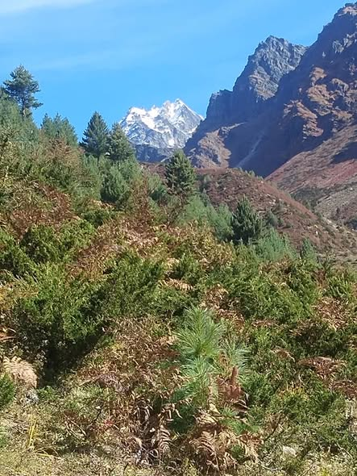
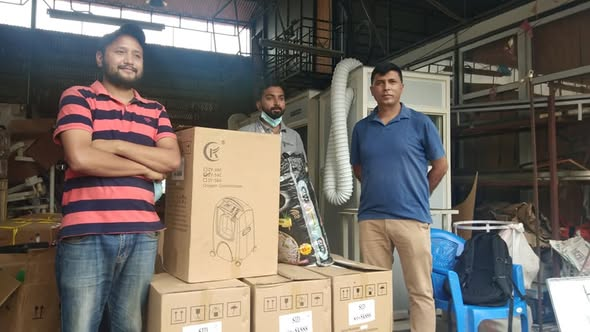
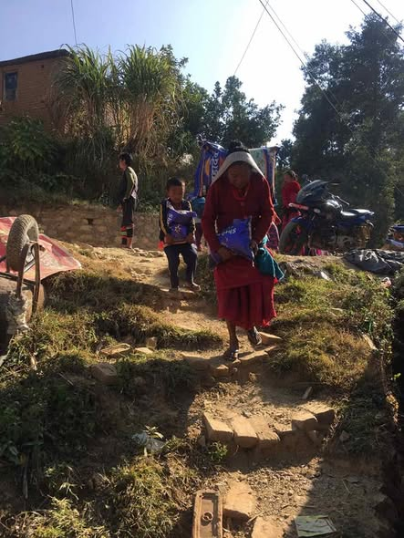

Turn readi.org.np from a 2016 brochure into a site that earns trust and donations
The current site is a WordPress 4.5 install on the Sydney theme. Most of its content dates from July 2016, it has no donate path, no team page, no reports, and it is English only. The new site should make three things easy: understanding what READI does in Karnali, trusting READI with money, and joining as a donor, volunteer or partner.
1 · Understand
Visitors see READI's work in under 10 seconds: Humla, children, nutrition, education, disaster relief.
2 · Trust
Registration, team, numbers with sources, reports and partners are all visible on the site.
3 · Act
Donate (from Nepal and abroad), volunteer, or get in touch, each in at most two clicks.
What READI is
Rural Empowerment and Development Initiative (READI Nepal). A volunteer-run Nepali NGO founded by young people from Humla (Karnali). It has a P.O. box in Kathmandu.
Mission: "Empowering people to transform their lives." The goal is a self-reliant Nepal built through human capital, local economies, community voice and technology.
Where it works: Simikot (Humla) and Changunarayan (Bhaktapur). Relief work covered the 2015 earthquake areas (Sindhupalchowk, Rasuwa, Gorkha) and Jajarkot in 2023.
Partners named on the site: Maresia de Tenerife Nepal ONG, AIPC Pandora (Madrid), DHO Humla and the District Hospital. An "Action Aid" link is implied but never explained.
New findings from Facebook
Source: the saved READI NEPAL Facebook page (150 followers) and the Embassy of Japan's post that it shares. The live Facebook page is facebook.com/readi.np. The website links to /readinepal, which is dead. Instagram @readinepal has 1 follower and no posts.
The story the website is missing
- ●2008: READI founded in Humla. It runs a children's home in a rented building in Simikot, providing shelter and schooling.
- ●Dec 2010: Humla's first library opens at the Simikot school, with TRAS, the Nepal Library Foundation and Rato Bangala School. TRAS also funds the Humla Delights café, whose profits go to the hostel.
- ●2018: READI gives a USD 7,000 grant to the Sapura Dream Foundation school in Humla (Elon University news)
- ●Jul 2019: First Maresía (Tenerife) volunteer camp in Changunarayan, which renovates the kitchen and dining room. €15 a month feeds one child.
- ●Sep 2017: Healthy-baby competition with Simkot Gaupalika (READI provided technical support). GoFundMe "READI Nepal Children's Fund".
- ●Nov 2020: COVID food and supplies for families of Shree Krishna Basic School, Changunarayan
- ●Jun 2021: Emergency life-saving health equipment, including oxygen concentrators, for COVID in Humla
- ●Dec 2023: Jajarkot earthquake relief
- ★11 Dec 2024: The Government of Japan (GGP) funds a new children's home in Simikot: USD 124,267 (about NPR 13.5M), permanent home for 30 children, which doubles as a community training centre
Trust signals we can now show
Donors and partners: Government of Japan (GGP), Trans-Himalayan Aid Society (TRAS, Vancouver, a donor since about 2010 that covers about 90% of the home's costs), Maresía ONG (Tenerife), Nepal Library Foundation, DHO Humla.
Press: The Himalayan Times, Spotlight Nepal and Ratopati (Dec 2024 handover). The Nepali press spells the name रेडि हुम्ला, and the Nepali version should use that spelling.
Sources disagree on: 20 vs 30 children in the home, "Primary" vs "Basic" school, and whether Humla Delights is still READI's. No registration number and no 2025–26 activity were found anywhere. Ask READI.






22 photos copied into web/photos/. They are only about 600px wide (Facebook previews), which is fine for cards but too small for a full-width hero. Ask READI for the originals. Photos showing children need consent before publishing.
Current site audit
The site has about 13 pages: Home · About · Gallery · Programs (Nutrition & Health, Education, Volunteer, plus School Support linked only from Home) · Blog (4 posts) · Contact.
| Severity | Problem | Fix in redesign |
|---|---|---|
| Critical | WordPress 4.5.32 (2016) and jQuery 1.12. It is unpatched and a security risk. http does not redirect to https. | New platform with HTTPS only (see decisions) |
| Critical | No Donate page or button (/donate/ returns 404). The only way to give is bank details inside the Contact page. | Donate page with eSewa/Khalti and card, plus a header button |
| High | No team, registration, reports or financials (/team/ returns 404) | An "Who we are" page and a "Transparency" page |
| High | The Programs page doesn't list the programs. Education is nearly empty, and School Support is not in the menu. | Program index with cards, plus a page template for each program |
| High | English only (lang="en-US") | Full Nepali version linked by a "नेपाली" toggle |
| High | Content is stale: © 2018, most content from 2016, 2 of 4 blog posts empty, authored by the default "aDmiNs" user | Content audit and rewrite, with named authors |
| Medium | The visible email (info@) and the mailto target (a gmail address) don't match. No phone number or map. | One contact source of truth |
| Medium | Gallery: about 62 photos at 150px, captions are filenames, alt text missing, no albums | Albums per program, captions and alt text, WebP |
| Medium | Five slider slides all say "Click to begin" and link to an on-page anchor. The header image is 580 KB. Images load over http. | One static hero with a clear CTA, optimised images |
| Low | Typos ("childrens", "orgnaizations"), an empty Twitter embed, an outdated FB likebox, no coherent palette (#d63737 red, stray greens and blue), a JPG logo | Copy edit, SVG logo, design tokens |
Inspiration: what to borrow
Teach For Nepal
NepalDonate form with amount chips, a once/monthly toggle, and Stripe plus eSewa. Annual report linked from the menu.
Kathmandu Living Labs
NepalA confident one-line hero, project cards tagged by theme, an "Insights" blog showing read time, and a row of partner logos.
Nepal Youth Foundation
NepalA hero that switches into an urgent appeal during disasters, giving tiers tied to outcomes, and annual impact numbers.
BRAC
South AsiaA hopeful hero with documentary photos and large stat cards. The language toggle is written in native script ("বাংলা") and leads to a full mirror site.
Pratham / ASER
South AsiaResearch given its own brand and a publications library, plus a "Stories of Change" portrait grid.
charity: water
GlobalProof-based trust (photos and GPS from every project), one dominant GIVE action, and amounts phrased as outcomes ("$20/mo covers a family").
Room to Read
GlobalThe tagline is the hero, with one huge stat and a map. The story grid filters by theme and country.
Teach For All
GlobalSeparate hero crops for desktop and mobile, simple icon cards, and a filterable partner map. Avoid its Google-Translate approach to other languages.
GiveDirectly
GlobalEvidence pillars: a number, a sentence, a photo and a research link. The donate widget sits in the hero. Story cards quote people by name.
Patterns the best sites share, which READI currently lacks
- A one-sentence promise and one main action in the hero
- Large numbers near the top, each with a label and a source
- Named people-first stories, photographed with consent
- Transparency on the page itself: reports, registration, partners
- Giving amounts phrased as outcomes ("Rs 1,500 = a month of lunches for one child")
- A short main menu plus a utility row with language, search and Donate
Proposed sitemap
This cuts the menu to five items plus a persistent Donate button. Each existing page has a home in the new structure (shown in parentheses).
Pick a design direction
Each card below is a home-page hero mock drawn in that direction's palette and type. The numbers are real figures from the current site, and the photos are placeholder gradients. You can annotate any part of a mock.
Why 1 is recommended: READI's most urgent gaps are donations and trust, and the biggest audience is people abroad who already know Nepal. Direction 1 serves them best. Direction 2's evidence pillars (number + source + link) can be added to it at no cost. The real risk is photography, not the design.
Other decisions I need from you
Roadmap
- Content & IA
wk 1–2: gather assets, rewrite copy - Design
wk 2–3: home, program and donate pages - Build
wk 3–5: theme, payments, Nepali - Migrate & launch
wk 6: 301 redirects, HTTPS, analytics
Risks
- Content, not code, is the bottleneck. The new site will look empty without new photos and numbers.
- Foreign-donation rules can limit Stripe/PayPal. Confirm with READI's registration status.
- Keep old URLs (
/nutrition-and-health/etc.) working with 301 redirects to protect search ranking. - The public bank details and personal Gmail addresses should move to an organizational email.
- Photos of malnourished children need consent and dignity guidelines before publishing.
Open questions
- Who maintains the site after launch, a volunteer or a staff member?
- Is the ActionAid relationship current, and can READI show the logo?
- Is Humla Delights Bakery still running? It could become a "Shop / Visit" story.
- Is there a domain or hosting budget, and who controls the readi.org.np DNS?
Sources: a crawl of readi.org.np (14 pages, Nov 2026) and visits to the 9 reference sites. The design source is Lavish's DaisyUI fallback, because READI has no design system worth keeping. The mocks use their own palettes. The reference sites' moods are partly based on their known branding, because the crawl only returned text.